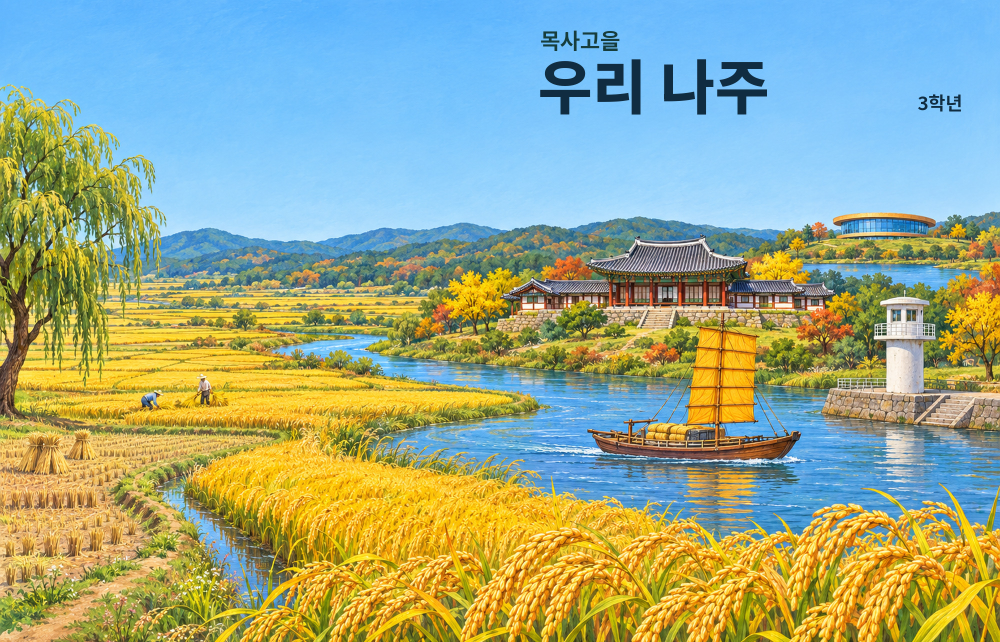
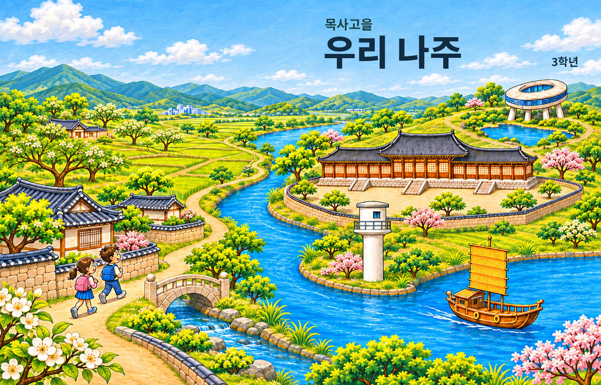
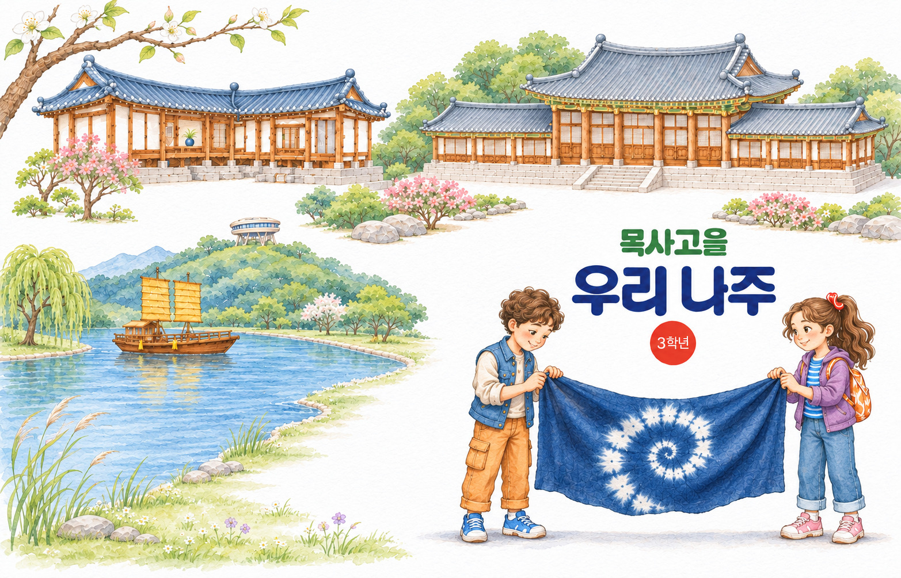
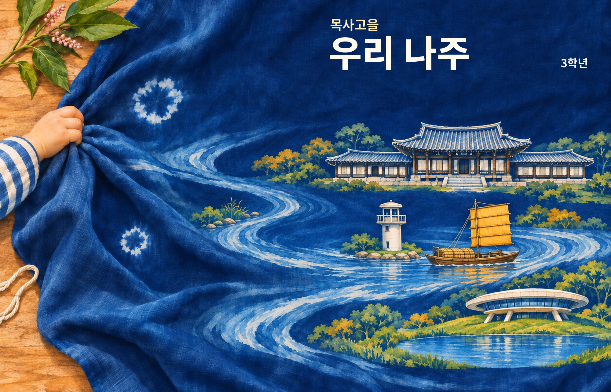
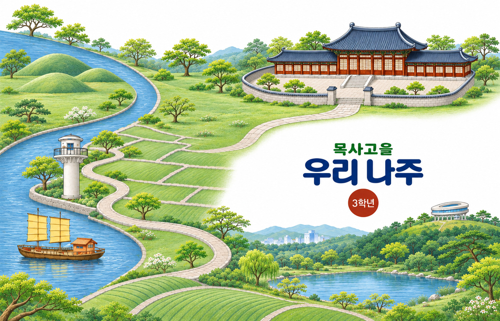
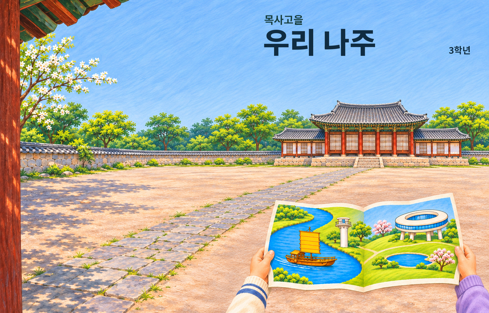

목사고을 우리 나주 · 펼친표지 12안
06·21·30·77·81·82번의 기존 표지와 새 표지를 같은 번호끼리 모았습니다. 그림을 누르면 펼친 원본을 크게 볼 수 있습니다.
다른 표지 자료
06나주평야


21마을길


30빛가람과 옛 도심


77쪽염색




81영산강


82금성관




06·21·30·77·81·82번의 기존 표지와 새 표지를 같은 번호끼리 모았습니다. 그림을 누르면 펼친 원본을 크게 볼 수 있습니다.





